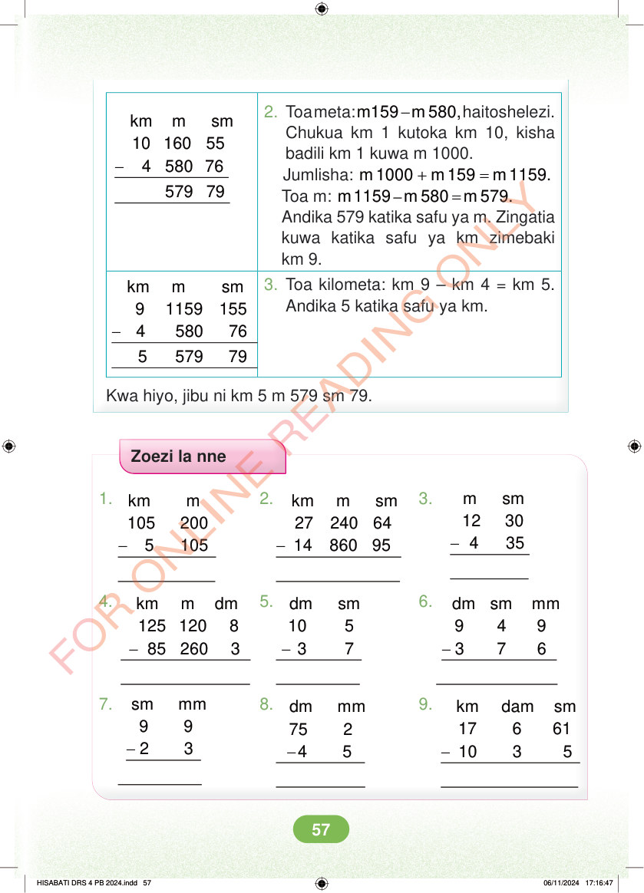

- km m sm 10 160 55 4 580 76 579 79 2. Toa meta: - m159 m 580,haitoshelezi. Chukua km 1 kutoka km 10, kisha badili km 1 kuwa m 1000. Jumlisha: + = m 1000 m 159 m 1159. Toa m: – = m 1159 m 580 m 579. Andika 579 katika safu ya m. Zingatia kuwa katika safu ya km zimebaki km 9. 3. Toa kilometa: km 9 – km 4 = km 5. Andika 5 katika safu ya km. - km m sm 9 1159 155 4 580 76 5 579 79 Kwa hiyo, jibu ni km 5 m 579 sm 79. Zoezi la nne 1. 2. 3. - m sm 12 30 4 35 - - km m sm 27 240 64 14 860 95 km m 105 200 5 105 4. 5. 6. - - - km m dm 125 120 8 85 260 3 dm sm 10 5 3 7 dm sm mm 9 4 9 3 7 6 7. 8. 9. - sm mm 9 9 2 3 - - dm mm 75 2 4 5 km dam sm 17 6 61 10 3 5 HISABATI DRS 4 PB 2024.indd 57 HISABATI DRS 4 PB 2024.indd 57 06/11/2024 17:16:47 06/11/2024 17:16:47